3350E VEHICLE DIRECTION CONTROL SYSTEM VDC
- Path
- Descriptions > 33 BRAKING SYSTEM > 3350 DRIVE CONTROL > 3350E VEHICLE DIRECTION CONTROL SYSTEM VDC
- Kind
- system description
- Applies to
- all engines; all production periods
- Interactive page
- https://sloeber94.github.io/elrnDB-aGt/en/#/125000358
Applies to: all engines; all production periods
CONSTRUCTION SPECIFICATIONS
VIEW OF ASSEMBLY
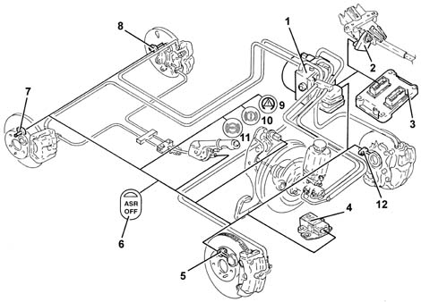
1 - ABS/VDC control unit
2 - Steering angle sensor
3 - Engine management control unit
4 - Slewing/lateral acceleration sensor
5 - Right front wheel sensor
6 - ASR off button
7 - Right rear wheel sensor
8 - Left rear wheel sensor
9 - ASR/VDC warning light
10 - EBD warning light
11 - ABS warning light
12 - Left front wheel sensor
SPECIFICATIONS
Function
Driving a vehicle in all conditions where the physical limits of grip and, consequently, stability may be reached can be a difficult task for the average driver therefore in order to further improve safe driving conditions an electronic system capable of assisting the driver with this difficult task is available.
The systems currently employed to ensure safer driving in particular conditions are mainly the A.B.S. which controls braking and the T.C. and A.S.R./M.S.R. systems which control traction during acceleration through action on the brakes (T.C.) and traction/drive torque during acceleration and release through action on the brakes and on the engine control system motorized throttle (A.S.R./M.S.R.).
The V.D.C. system (Vehicle Dynamics Control) includes all the above listed functions ensuring optimum dynamic control of the vehicle with the addition of specific sensors:
- steering angle sensor on the steering wheel
- slewing/lateral acceleration sensor at the centre of gravity under the centre tunnel.
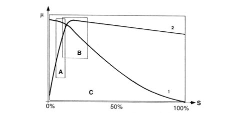
µ - Wheel grip
S - Slipping
A - EBD intervention area
A - ABS intervention area
C - VDC intervention area
1 - Lateral force curve
2 - Longitudinal force curve
As can be seen from the grip/slipping diagram, the area covered by the VDC system is larger than that covered by a conventional ABS/EBD system.
The V.D.C. system cannot be switched off as it is a safety system; the A.S.R./M.S.R. function, on the other hand, can be switched off via the button in the centre console.
The intervention of the V.D.C. system is signalled by a special warning light in the instrument panel node (N.Q.S.)
COMPOSITION
Structure
The V.D.C. system consists of:
- an electro-hydraulic/electronic A.B.S. 5.7 control unit (with a V.D.C. logic)
- interface with the C-CAN line, in the ABS control unit, for conversing with the engine management control unit, robotized transmission, body computer and steering angle sensor
- magnetic-resistive type wheel speed sensors
- steering angle sensor with C.A.N. interface (steering angle sensor)
- slewing/lateral acceleration sensor in one-piece
- brake fluid pressure sensor fitted on the A.B.S. control unit
- ASR/VDC warning light in the instrument panel controlled via the C.A.N. line
- A.S.R. off switch with a warning light in the button
OPERATION
General remarks
The V.D.C. system continuously recognizes a loss in grip for the wheels, both longitudinal and transverse, in all driving conditions from braking to acceleration in order to ensure the direction and the stability of the vehicle.
The management of the V.D.C. system is entrusted to the Bosch 5.7 type A.B.S. electronic control unit, integrated with a special electro-hydraulic control unit, that allows action on the braking system independently of the action of the user.
The control unit processes the following signals:
- steering angle/steering wheel rotation speed
- lateral acceleration and slewing
- motorized throttle position
- wheel rpm
- hydraulic braking system pressure
and uses special algorithms in the electronic control unit software to obtain the figures for the dynamic control of the vehicle:
- longitudinal and transverse sliding between the wheels and the road surface
- axle drift.
Using these figures the system interprets the effective dynamics of the vehicle; having identified all the critical conditions due to environmental factors (e.g. surface with poor grip) or any errors made by the user (e.g. panic situations) and with subsequent intervention on the brakes and the drive torque, the vehicle is restored to good driving conditions.
The system interfaces with:
- N.C.M. for drive torque adjustment,
- N.C.R. (robotized gearbox node) for the management of gear changes
- N.B.C. (Body Computer Node) for the transmission of the vehicle speed and the control of the warning lights.
The exchange of information between these components takes place via the C-CAN and B-CAN lines.
There is a dedicated line (line K) for the diagnosis of the system.
The system is combined with a power unit with a specific brake pump; in addition, the pipes between the brake pump and the A.B.S. control unit have a Titaflex insert because the diameter of the pipe (6mm) is larger than regular pipes (4 mm); this is designed to prevent adverse effects on the operation of the VDC at low brake fluid temperatures.
The V.D.C. system switches on automatically when the vehicle is started up and cannot be switched off by the user; the button in the centre console only switches off the A.S.R. function and only when advisable (see A.S.R. system).
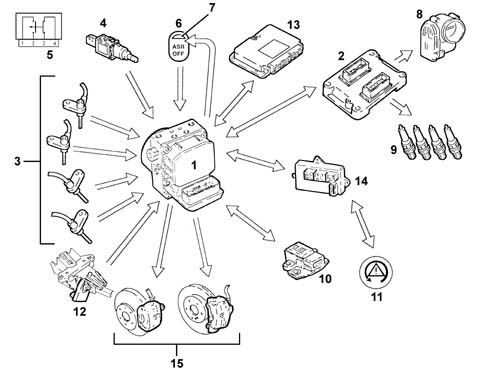
INPUT SIGNALS:
- Wheel speed sensors (from direct line) (3)
- Brake pedal switch (4)
- Brake pedal switch wiring diagram (5)
- ASR off button (from direct line) (6)
- Engine management control unit (2)
- Throttle angle position (from C-CAN line)
- Body computer (14)
- Handbrake lever position (from C-CAN line)
- Warning light status signal (from C-CAN line) (11)
- Slewing sensor (rotation of vehicle on vertical axis) (from direct line) (10)
- Lateral acceleration sensor (from direct line) (10)
- Steering angle/steering wheel rotation sensor (from C-CAN line) (12)
- Robotized transmission control unit (gear engaged status) (from C-CAN line) (13)
- Hydraulic system pressure sensor (from direct line) (1)
OUTPUT SIGNALS:
- Brake pressure modulation control (15)
- Ignition advance reduction control (from C-CAN line) (9)
- Engine power management control (from C-CAN line) (8)
- Gear change inhibition (from C-CAN line) (13)
- Wheel speed signal for speedometer and milometer (from C-CAN) (14)
- VSO signal (vehicle speed) (14)
- ASR/VDC warning light in instrument panel control (from C-CAN line) (11)
- ASR off LED (7)
As stated previously, in addition to controlling the slipping of the vehicle in a lengthwise direction, the VDC system also controls slipping in a sideways direction and, as a result, controls the lateral stability of the vehicle.
The lateral stability of a vehicle depends on the reaction of the tyres to lateral forces and the adhesion force of the wheel with the road surface.
It should be remembered that the adhesion force of a wheel depends on the vertical load which depends on the situation the wheel finds itself in (resting or no load) and on the friction coefficient which depends on the road surface and tyre conditions.
When the vehicle is travelling in a straight line, the lateral forces do not really have an effect unless outside factors that increase its intensity intervene (e.g. a gust of wind or a change to a different surface), unlike when driving round a bend where there is a strong increase in lateral forces due to the increase in centrifugal force.
The action of the lateral forces produce a variation in the drift angle of the wheels and, consequently, a variation in the axle drift (drift angle = difference between the desired route and the effective route).
The lateral forces do not, however, act equally on all four wheels because they are not subject to the same load conditions, in effect the load on the wheel differs depending on the situation the wheel is in, namely:
- acceleration (lightening of the front axle and loading of the rear axle)
- braking (loading of the front axle and lightening of the rear axle)
- bend to the right/left (loading or the outer wheels and lightening of the inner wheels)
- accelerating/decelerating round a bend (combination of the cases mentioned above).
It is obvious that if the lateral forces acting on the individual wheels vary, there will also be a variation in the forces acting on the vehicle axles; consequently the lateral forces acting on the front axle overcome those on the rear axle and viceversa determining a rotation (moment0 on the vehicle axis of the vehicle (slewing axis).
The moment of slewing affects the behaviour of the vehicle producing either understeer or oversteer.
Understeer for a vehicle is defined as the drift angle of the front axle increasing, during increasing lateral acceleration, greatly compared with that of the rear axle. In this case, when the vehicle is driving round a bend, it will tend to go straight (take the bend wide).
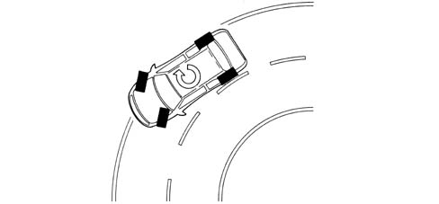
Oversteer for a vehicle is when, with increasing transverse acceleration, the drift angle for the rear axle increases greatly compared with that of the front axle. In this case the vehicle tends to "do an about-face" (the rear axle tends to go straight, therefore the vehicle "hugs" the bend).
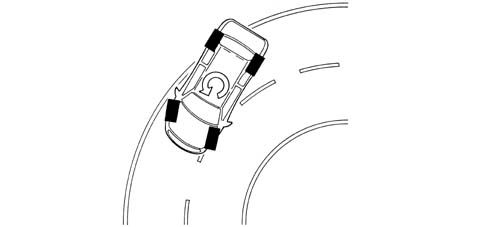
In order to keep the effect of lateral forces under control and limit the slewing moment, the A.B.S. 5.7 control unit must firstly calculate the behaviour of vehicle set by the driver using:
- steering angle/steering wheel rotation speed sensor
- accelerator pedal position
- brake circuit pressure
after which the control unit should check the actual behaviour of the vehicle through:
- The wheel sensors (vehicle speed/wheel speed),
- lateral acceleration sensor
- slewing sensor.
As can be deduced from what has been said earlier, the control unit is capable of:
- detecting actions carried out by the user, in effect, through the position of the steering wheel it checks the number of degrees (wide radius or narrow radius bends) and the speed for rotating the steering wheel (sharp or gentle rotations) and, using the position of the throttle and the brake pressure when accelerating or braking, how the user is taking the bend or deviating from the straight path.
- detecting the actual behaviour of the vehicle given the environmental variables, e.g. slippery surface, reaction of the vehicle to incorrect manoeuvres by the user, etc., in order to identify the moment of slewing and the lateral sliding of the axles via the sensors on the four wheels and the slewing/lateral acceleration sensor.
These two operations are necessary to superimpose the mathematical model mapped in the control unit on the effective behaviour of the vehicle in order to identify the state in which the vehicle is in (understeer or oversteer) and decide the action for the brakes and the engine
Understeer round bends
The control unit verifies the presence of understeer (mainly from the drift of the front axle), corrects the behaviour of the vehicle, braking the inner wheels round the bend in order to create an opposing moment which will lead the vehicle towards the centre of the bend and, possibly, reducing the drive torque.
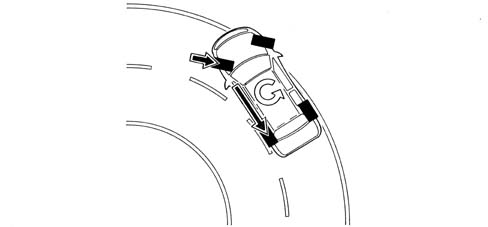
Oversteer round bends
In the presence of understeer (mainly from the drift of the rear axle) the control unit corrects the behaviour of the vehicle, braking the outer front wheel round the bend in order to create an opposite slewing moment, if necessary increasing the drive torque.
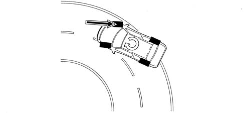
Sharp variations from the straight path (slalom/overtaking)
In the case of sharp variations from the path (e.g. overtaking, slalom), the control unit identifies possible oversteer and understeer conditions and corrects the path of the vehicle acting as described in the cases mentioned previously.
Sharp variation from the straight path (driving on different surfaces)
The control unit can preceive deviations from the trajectory and prevalence of axle drift, and corrects the trajectory with appropriate actions on the brakes and engine.
Sharp acceleration/deceleration
The control unit uses the A.S.R./M.S.R. strategy also controlling the lateral acceleration of the vehicle and, as a result, regulating the action on the front and rear brakes and on the engine torque in a more complete way than on vehicles with ASR only.
A.s.r. exclusion
If the A.S.R./M.S.R. is excluded, the following functions remain activated:
- A.B.S./E.B.D.
- T.C. up to a speed of 40 km per hour
- partial V.D.C.
V.d.c. intervention display
The intervention of the VDC system is shown by the special warning light in the instrument panel flashing (5 Hz d.c. 50%).
Diagnostic functions
The ABS 5.7 control unit is capable of carrying out the autodiagnosis of the system and, in the case of a fault, can:
- deactivate the entire system
- partly deactivate the system (maintaining the ABS/EBD function).
Below is a list of the faults that can be detected by the control unit, the status of the warning lights and the type of recovery used.
Error | ABS warning light | EBD warning light | ASR/VDC warning light | Recovery |
|---|---|---|---|---|
Right front sensor electrical error | ON | OFF | ON | R3 |
Left front sensor electrical error | ON | OFF | ON | R3 |
Right rear sensor electrical error | ON | OFF | ON | R3 |
Left rear sensor electrical error | ON | OFF | ON | R3 |
Right front sensor error | ON | OFF | ON | R3 |
Left front sensor error | ON | OFF | ON | R3 |
Right rear sensor error | ON | OFF | ON | R3 |
Left rear sensor error | ON | OFF | ON | R3 |
Right front ABS discharge valve | ON | ON | ON | R2 |
Right front ABS pressurizing valve | ON | ON | ON | R2 |
Left front ABS discharge valve | ON | ON | ON | R2 |
Left front ABS pressurizing valve | ON | ON | ON | R2 |
Left rear ABS discharge valve | ON | ON | ON | R2 |
Left rear ABS pressurizing valve | ON | ON | ON | R2 |
Right rear ABS discharge valve | ON | ON | ON | R2 |
Right rear ABS pressurizing valve | ON | ON | ON | R2 |
Main valve 1 (VLV1) | ON | ON | ON | R2 |
Main valve 2 (VLV2) | ON | ON | ON | R2 |
Operating valve 1 (USV1) | ON | ON | ON | R2 |
Operating valve 2 (USV2) | ON | ON | ON | R2 |
Pump motor | ON | OFF | ON | R3 |
Valve relay | ON | ON | ON | R2/R5 |
NA - NC brake light switch | ON | OFF | ON | R3 |
Lateral acceleration sensor (AY) | OFF | OFF | ON | R4 |
Slewing sensor | OFF | OFF | ON | R4 |
Brake fluid pressure sensor | ON | OFF | ON | R3 |
Lambda 6 (magnetic wheel malfunction) | ON | ON | R1 | |
NOTB (implementation irregularity) | ON | OFF | ON | R5/R3 |
Steering angle sensor | OFF | OFF | ON | R4 |
CAN-BUS | OFF | OFF | ON | R4 |
Engine CAN message errors | OFF | OFF | ON | R4 |
Control unit | ON | ON | ON | R1 |
Supply voltage | ON | ON | ON | R2 |
Variant Coding (vehicle configuration received from CAN incorrect) | ON | ON | ON | R1 |
Communication with failure warning lights | ON | ON | ON | ON |
R1 - Deactivation of the system
R2 - Deactivation of the VDC/ASR, ABS, EBD
R3 - Deactivation of the VDC/ASR, ABS
R4 - Deactivation of the VDC/ASR
R5 - Inhibition of the VDC/ASR system and ABS during malfunction
R6 - Memorizing a fault without disabling the system
Warning light operation
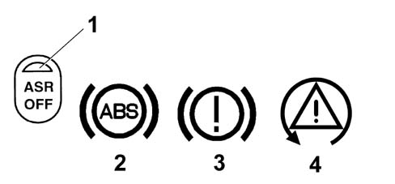
1 - ASR warning light in button
2 - ABS warning light
3 - ASR/VDC warning light
4 - ESP warning light
The control unit activates the warning lights according to the following logic:
ASR warning light in button | EBD warning light | ABS warning light | ASR/VDC warning light | |
|---|---|---|---|---|
Check (4s) | ON | ON | ON | ON |
Whilst driving | OFF | OFF | OFF | OFF |
ASR switched off by button | ON | OFF | OFF | OFF |
EBD faulty | ON | ON | ON | ON |
ABS faulty | ON | OFF | ON | ON |
ASR faulty | ON | OFF | OFF | ON |
VDC faulty | OFF | OFF | OFF | ON |
Insufficient brake fluid level parking brake on | OFF | ON | OFF | OFF |
ASR/VDC activated | OFF | OFF | OFF | Intermittent 4HZ d.c. 50% |
Component description
Operation of the hydraulic system
The electro-hydraulic unit on the version equipped with V.D.C. has 4 additional solenoid valves.
When the (normally closed) intake solenoid valve is activated, the additional quantity of fluid required to increase the pressure and brake the wheel(s) can be received.
When the (normally open) solenoid valve is activated, the modulated pressure produced by the supply pump can be maintained in the circuit.
When the VDC does not intervene, the ECU:
- does not activate the inlet solenoid (N.C.) (2).
- does not activate the operating solenoid (N.0.) (3).
In this way the system works like the Bosch 5.7 ABS
Characteristic of working principle 3340A ABS CHECK/ADJUSTMENT DEVICES
.
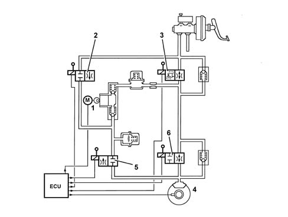
During the intervention of the V.D.C. system, the electronic control unit:
- activates the hydraulic pump (1)
- activates the (N.C.) intake solenoid valve (2).
- activates the (N.A.) operating solenoid valve (3).
Therefore the pressure produced by the pump (1) reaches the brake caliper and is modulated, on the request of the electronic control unit, by the discharge (5) and pressurizing (6) solenoid valves.
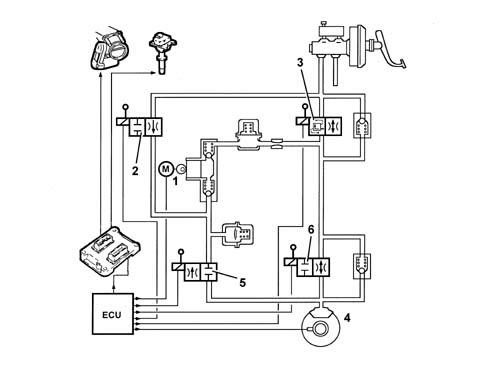
DESCRIPTION OF COMPONENTS
Electro-hydraulic unit
Composition
Structure
The electro-hydraulic unit consists of an electronic control unit and an electro-hydraulic control unit.
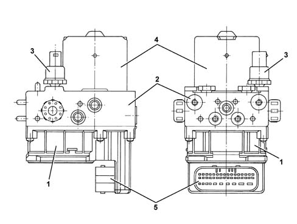
1 - Electronic control unit
2 - Electro-hydraulic control unit
3 - Brake fluid pressure sensor
4 - Recovery pump
5 - 42 pin connector
Electronic control unit
Specifications
Function
The electronic control unit carries out the following functions:
- acquiring the data coming from the wheel rpm sensors
- memorizing the control parameters defined during the vehicle P.D.I.
- memorizing the software
- processing the data acquired
- controlling the braking process
- detecting faults in the braking system components
- memorizing the fault codes and activating the ABS/EBD/ASR/VDC warning lights
- transmitting and receiving data via the diagnostic connector
- conversing with the engine management control unit
- controlling the ASR/MSR/VDC process
- transmitting and receiving data via the C-CAN line.
- conversing with the robotized transmission (NCR).
Pin out
The control unit is conected to the electrical system via a 42 pin connector.
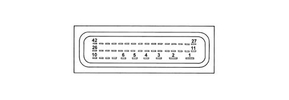
1 - Power earth
2 - +30 power supply
3 - N.C.
4 - N.C.
5 - Signal earth
6 - +30 Supply
7 - N.C.
8 - Acceleration/slewing sensor signal
9 - Lateral acceleration sensor test signal
10 - Slewing sensor reference signal
11 - K diagnostic line
12 - Left front sensor signal
13 - Left rear sensor positive
14 - Left rear sensor signal
15 - Right front sensor positive
16 - Right front sensor signal
17 - N.C.
18 - ASR warning light in button
19 - N.C.
10 - N.C. stop switch
21 - Acceleration/slewing sensor and steering sensor earth
22 - N.C.
23 - +15 Supply
24 - CAN-H line
25 - Brake fluid pressure sensor earth
26 - Brake fluid pressure sensor signal
27 - ASR switch
28 - Left front sensor positive
29 - N.C.
30 - Right rear sensor positive
31 - Right rear sensor signal
32 - N.A. stop switch
33 - N.C.
34 - N.C.
35 - N.C.
36 - N.C.
37 - VSO vehicle speed (recovery)
38 - N.C.
39 - Acceleration/slewing sensor and steering sensor supply
40 - CAN-L line
41 - Slewing sensor signal
42 - Brake fluid pressure sensor positive
Principle diagram
PRINCIPLE WIRING DIAGRAM
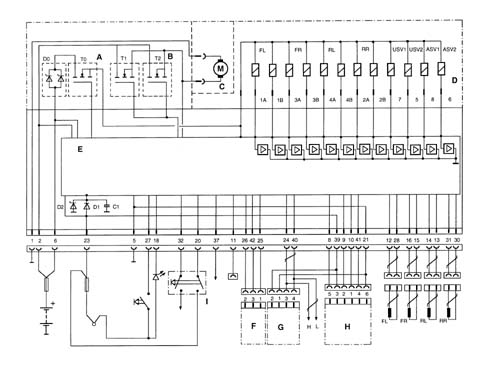
A - Solenoid valve relay
B - Pump motor relay
C - Pump motor
D - Valve assembly
E - Electronic control unit
F - Brake fluid pressure monitoring sensor
G - Steering angle sensor
H - Lateral acceleration/slewing sensor
I - NA/NC brake pedal sensor
FL - Left front sensor
FR - Right front sensor
RL - Left rear sensor
RR - Right rear sensor
1A-1B - Left front wheel solenoid valves
34-3B - Left front wheel solenoid valves
4A-4B - Left rear wheel solenoid valves
2A-2B - Right rear wheel solenoid valves
5 - Operating solenoid valve 2
6 - Intake solenoid valve 2
7 - Operating solenoid valve 1
8 - Intake solenoid valve 1
Electro-hydraulic control unit
Specifications
Function
It has the task of modulating the pressure of the fluid at the brake calipers via solenoid valves with the following operating stages:
- brake fluid pressure increase
- brake fluid pressure maintenance
- brake fluid pressure decrease.
Composition
Structure
The electro-hydraulic control unit consists of:
- twelve 2-way solenoid valves
- a dual circuit recovery pump
- two low pressure accumulators
- two high pressure accumulators
- brake fluid pressure sensor.
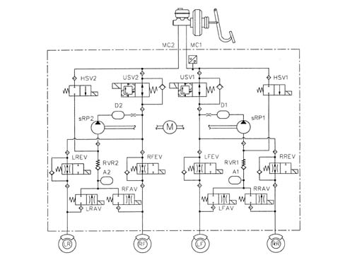
Steering sensor
Specifications
Function
The steering angle sensor has the task of measuring the angles in degrees and the rotation speed of the steering wheel and making these figures available via the C-CAN (steering angle sensor node).
Composition
Location
The sensor is fitted directly on the steering column switch unit and is incorporated in it (it is not therefore available on its own as spares).
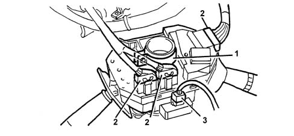
1 - Steering column switch unit assembly
2 - Steering column switch unit connectors
3 - Steering sensor connector
Pin out
The sensor is equipped with a four pin connector with two pins for the sensor power supply and two pins for the C-CAN line.
Pin 3, C-CAN H line
Pin 1, C-CAN L line
Pin 2, C-CAN L line
Pin 3, C-CAN H line
Pin 4, C-CAN H line
Pin 5, Positive
Pin 6, +15 Earth
Operation
The sensor measures the following via internal electronics:
- the angular position of the steering column
- the rotation speed of the steering column.
This information is processed directly by the sensor and is made available at the brake node via the C-CAN.
The sensor has an angular measurement range of 1560° and an angular resolution of 0.1°
The sensor must be zeroed in relation to the position of the steering wheel in order to work properly. This is done using the diagnostic equipment (see instructions with the EXAMINER).
The sensor has an autodiagnostic function and is capable of carrying out a check on the plausibility of the information processed.
Lateral acceleration/slewing sensor
Specifications
Function
The slewing/lateral acceleration sensor has the task of detecting rotation on the vehicle's vertical axis (slewing) and measuring lateral acceleration.
The connection to the ABS control unit is direct.
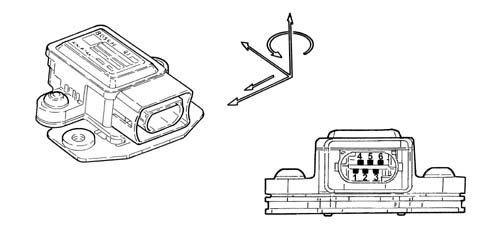
The sensor has the following functional specifications:
Supply voltage:
- Minimum value 8.2V
- Maximum value 16V
- Rated value 12V
Operating temperature:
- Minimum value -40°C
- Maximum value +85°C
Current absorption at 12 V:
- Rated value 70mA
Slewing sensor:
- Measurement range ± 100 °/s
- Resolution ± 0.3 °/s
Lateral acceleration sensor:
- Measurement range ± 1.8 g
Composition
The sensor consists of a plastic casing that houses the sensitive elements which detect slewing and lateral acceleration and the electronic management.
The sensor has a connector with six pins all of which are connected.
Pin 1, Slewing sensor reference signal
Pin 2, Lateral acceleration sensor test signal
Pin 3 - Sensor power supply from control unit
Pin 4 - Slewing signal in °/Sec
Pin 5 - Lateral acceleration signal in G
Pin 6 - Earth from control unit
Location
The sensor is located in the centre of gravity area under the centre console near the Air Bag control unit.
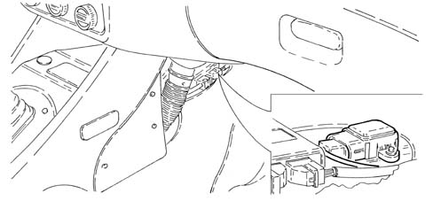
Operation
The sensor receives a direct power supply from the ABS control unit and, simultaneously, provides the slewing and acceleration signal via the sensitive elements.
The slewing signal is processed directly by the sensor and supplied to the ABS control unit with a reference signal superimposed.
The slewing signal has a range of between:
- lower limit 0.65V
- upper limit 4.35V
- reference signal 2.5V.
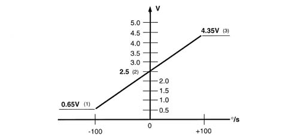
1 - Upper limit
2 - Reference signal
3 - Lower limit
The sensor receives an alternate type signal from the ABS control unit for the fault diagnosis and safety functions.
Active sensors
Specifications
For the active sensors, see the ABS
Characteristic of working principle 3340 ANTI-LOCK BRAKE SYSTEM (ABS)
.
ASR on button
Specifications
Function
For the ASR off button
Characteristic of working principle 3350A ANTI - SPIN REGULATION DEVICES
.
Topics linked from this page (3)
- 3340 ANTI-LOCK BRAKE SYSTEM (ABS)
- 3340A ABS CHECK/ADJUSTMENT DEVICES
- 3350A ANTI - SPIN REGULATION DEVICES